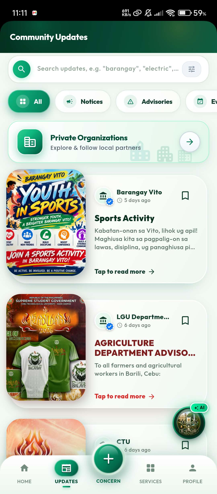

Announcements for the right audience
Barangays, municipal departments and approved organizations publish notices, advisories and events. Each one is addressed to a specific barangay or to everyone. Residents can search, filter and bookmark them.